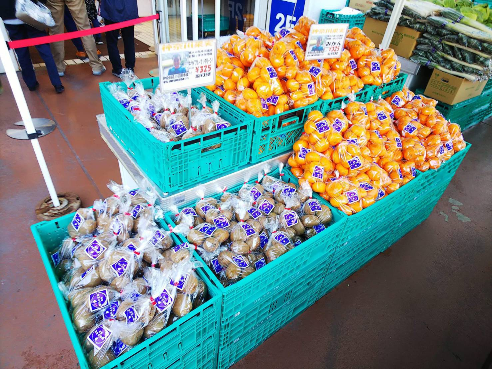

イベント販売お手伝い@イトーヨーカドー上永谷店さん
2020.03.09 佐野
はじめまして、フリーライドばかりの幽霊メンバー佐野です。普段は卸売市場の研究をしています！
さて、今回はイトーヨーカ堂上永谷店さんにて、イベントのお手伝いをさせていただきました。メンバーは、丸山さん、あきさわ農園でお手伝いをされている農大生2名と佐野の計4名です。
-------------------------------------
場所：神奈川県横浜市
日付：2020年3月1日(日)
内容：イベント販売のお手伝い
-------------------------------------
毎朝5時出勤(！)の佐山さんと合流したのち、早速、品出しのお手伝いをさせていただきました。ウイルスで世間が混乱するなか、開店前からできたトイレットペーパー購入のための長蛇の列にも驚かされました。
開店を迎えてから、15時のイベント終了まで、人が絶えることはありませんでした。下の写真は10時頃ですが、あきさわ農園の柑橘や最近テレビで紹介された湘南ゴールドはすぐに箱が空になりました。

JA横浜の方も当日一緒にお仕事をされており、たくさん並んでいた横浜市産の地場野菜も、ほとんど売り切り。「このカブは浅漬けに向いていますか？」などなど、お客さんと話す頻度にも驚きました。バスターミナルが目の前にあるからか、バスの待ち時間に泣く泣く買えなくなってしまったお客さまや、15時を過ぎると「終わっちゃったの？！」と残念がるお客さまもちらほら。わたしも買えたら、、、なんて淡い期待はあっけなく破れました。
お昼休憩時とイベント終了後には、佐山さんからお時間をいただき、私たちの質問にも惜しみなく応じてくださいました。
偏見にまみれた意見を承知で申しますと（静岡で生まれ育ち、学部時代は北海道で過ごしたからか、ローカルスーパーの地域密着度の強さのせいです、と言い訳させてください、、、！）、大手小売のイベントは各店舗共通の特売的なイメージを強く持っていました。
ですが、今回のイベントは、農協の方も、生産者の方も一緒に品出し・販売をする上永谷店オリジナルなイベントだったのです。神奈川県が農業大国であることという地理条件もさることながら、生産者と消費者の距離が近い小売のあり方は（労力は計り知れませんが）小売の規模を問わないんだ、ということを目の当たりにしました。
そして、販売・品揃えのオリジナルさのみならず、ターミナルを用いた発注システム、残留農薬検査等の安全性管理（「顔が見える野菜」も厳しいクオリティ管理を経ているとのこと）、食品廃棄削減を目的とした自社農場への有機肥料提供などなど、、、効率性と持続可能性も既に事業化され、実装されていることも教えていただきました。
たった1日のお手伝いで分かることなんて本当にわずかなのですが、小売について少し理解が深まり、その深さにも改めて圧倒されました。頭ではなんとなくわかっているものの、自分が商品を手に取るに至るまで、生産者の方だけではなくて、本当に多くの方を経て、その商品が検査され、加工・包装され、運ばれ、値付けされ、当たり前に店頭に並んでいることを肌で感じました。
帰り際に秋澤さんから大根をいただき、丸山さんとわたしは地下の食品売り場へ（上永谷店さん、デパートのような作りなのです。）。
あきさわ園の柑橘やキウイの他にも、イベントでも取り扱われていた農家さんのトマト、神奈川県産の野菜ばかりです。今更ながら、このタイミングで買うべきでした。今度は手ぶらで上永谷店に遊びに行かなくては！と思います。
最後になりましたが、佐山さん、秋澤さん、上永谷店の皆様、本当にありがとうございました！